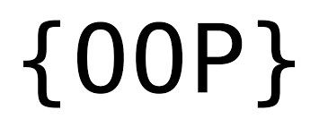

about me
I'm Tinyiko Rhulani Maluleke, an experienced Tech Officer: Customer Engineer 2 with strong background in the installation and maintenance of software and hardware. Trained to deliver an exceptional level of customer service in IT support. Ready to take tenplus years in the field to repair, modify, install, and advise in the management of software and hardware.
Download CV
projects

Data visualization is
the practice of translating information into a visual context, such as a map or graph, to make data easier for the human brain to understand and pull insights from.
The main goal of data visualization is to make it easier to identify patterns, trends and outliers in large data sets.
Statistical thinking involves the careful design of a study to collect meaningful data to answer a focused research question, detailed analysis of patterns in the data, and drawing conclusions that go beyond the observed data.
The term Morse Code refers to
either of two systems for representing letters of the alphabet, numerals, and punctuation marks by an arrangement of dots, dashes, and spaces.
The codes are transmitted as electrical pulses of varied lengths or analogous mechanical or visual signals, such as flashing lights.
Test-driven development (TDD) is a software development process relying on software requirements being converted to test cases before software is fully developed, and tracking all software development by repeatedly testing the software against all test cases.

Object-oriented programming (OOP) is
a computer programming model that organizes software design around data, or objects, rather than functions and logic. An object can be defined as a data field that has unique attributes and behavior.

Exploratory Data Analysis refers to the critical process of performing initial investigations on data so as to discover patterns,to spot anomalies,to test hypothesis and to check assumptions with the help of summary statistics and graphical representations.
skills


Contact